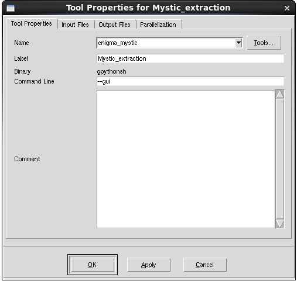

TCAD to SPICE
3. Mystic SPICE Model Extraction
3.1 Using Mystic in the TCAD to SPICE Framework
3.2 Mystic Extraction Strategy
3.3 BSIM-CMG Model Extraction
3.4 Mystic Graphical User Interface
Objectives
- To demonstrate how to set up and execute Mystic SPICE model extractions.
- To run a Mystic uniform and a response surface model extraction using Mystic with Sentaurus Workbench (SWB) Python.
- To demonstrate how to use the Mystic graphical user interface for SPICE model extraction.
3.1 Using Mystic in the TCAD to SPICE Framework
Mystic can be used to extract individual SPICE compact models against TCAD data using a predefined extraction strategy. The SWB Python shell ("gpythonsh") can extend this capability to produce either an array of SPICE models or a compound response surface model (RSM) to represent a range of process splits and variability conditions, which can correspond to a wide range of device behavior.
Mystic links directly to the SWB Python database, which can be used to control the propagation of data, metadata, and fitted SPICE model parameters throughout a multistage extraction flow.
This section covers the usage of Mystic in the TCAD to SPICE framework, looking at the flow of information between multiple extraction stages. For details about the Mystic extraction strategies, see Section 3.1.3 Uniform Extraction.
The example provided here is a TCAD to SPICE process variation design-of-experiments (DoE) for a 14 nm FinFET device, using BSIM-CMG as the underlying SPICE compact model. The workflow contains two sequential Mystic extractions:
- A uniform model extraction, which extracts NMOS and PMOS SPICE models at the nominal process point of the DoE
- A response surface model extraction, which uses the fitted nominal model as a starting point and extracts one SPICE model per DoE process split, using a subset of SPICE model parameters
The complete project can be investigated from within Sentaurus Workbench in the directory Applications_Library/GettingStarted/tcadtospice/mystic/Mystic_tutorial.
A pre-executed project is also included, which contains input data for the above project, and can be found in the directory Applications_Library/GettingStarted/tcadtospice/mystic/ 14nmFinFETSentaurus_PltOnly.
This section covers the following topics:
- Section 3.1.1 Uploading Data
- Section 3.1.2 Setting Up Mystic in Sentaurus Workbench
- Section 3.1.3 Uniform Extraction
- Section 3.1.4 Response Surface Model Extraction
- Section 3.1.5 Extraction Results
3.1.1 Uploading Data
To extract a SPICE model using Mystic, you must first upload the target data to the SWB Python database. This ensures consistency between the data and its associated instance parameters and bias conditions throughout the extraction flow. Uploading all the data upfront simplifies user interaction with the data in the various extraction stages.
When performing a response surface model extraction on a process DoE, you must supply the process axes and midpoints as Sentaurus Workbench variables. The axes for the example described here are shown in Table 1.
| Parameter name | Value | Description |
|---|---|---|
| axis1 | l | Fin length |
| axis1_midpoint | 25e-9 | Nominal fin length value |
| axis2 | hfin | Fin height |
| axis2_midpoint | 40e-9 | Nominal fin height value |
| axis3 | wfin | Fin width |
| axis3_midpoint | 8e-9 | Nominal fin width value |
| vaxis4 | afin | Fin angle parameter |
| axis4_midpoint | 88 | Nominal fin slope parameter |
| axis5 | tspacer | Spacer thickness |
| axis5_midpoint | 8e-9 | Nominal spacer thickness value |
The targets used in this example are Id–Vg curves at low and high Vdd drain bias, three Id–Vd curves at different gate biases above Vt, and Cgg–Vg curves at zero and Vdd drain bias.
For more information about why these targets are used, see Section 3.3 BSIM-CMG Model Extraction.
The gpythonsh scripting environment provides several Python objects and classes that are injected automatically into the environment at runtime. The objects and classes relevant to the data upload stage are described in Table 2.
| Variable | Description |
|---|---|
| node_prj | The database project object, which is precreated by gpythonsh to be used as a container for data stored by the current Sentaurus Workbench node. |
| dbi | The global interface API to the SWB Python database. In this context, it is used to create a dataset inside node_prj in which to store the target data objects. For more information about the dbi object, see the API documentation. |
| Data | The Data class provides an interface for creating Python objects from .plt and .csv files. It also has an underlying connection to the SWB Python database, so data objects can be upload directly to a dataset on creation. For a full description of the Data class, see the API documentation. |
Before uploading the data, the upload stage also identifies the midpoints of the DoE, based on the supplied axis midpoint variables, and tags each row with a midpoint flag as shown in the following code:
# Get the DoE coordinate of this point
doe = {"@axis1@": @lgate@,
"@axis2@": @hfin@,
"@axis3@": @tfin@,
"@axis4@": @afin@,
"@axis5@": @tspacer@ }
# Check whether you are at a midpoint
if (doe["@axis1@"] == @axis1_midpoint@) and \
(doe["@axis2@"] == @axis2_midpoint@) and \
(doe["@axis3@"] == @axis3_midpoint@) and \
(doe["@axis4@"] == @axis4_midpoint@) and \
(doe["@axis5@"] == @axis5_midpoint@):
midpoint=True
print("DOE: midpoint True")
else:
midpoint=False
print("DOE: midpoint False")
# Update project metadata
node_prj.add_metadata(doe=doe, midpoint=midpoint)
The @axis#@ and @axis#_midpoint@ variables are supplied by users, based on the number of DoE axes, axes labels, and axes values. Axes labels must be simple alphanumeric strings (no special characters) as they will be used later in Synopsys PrimeSim™ HSPICE® simulations.
A midpoint variable is pushed to the end of the Sentaurus Workbench project with a True or False value. This is used to decide which nodes are executed later in the flow. The DoE coordinates are also attached to the project as metadata, which gives it a unique identity that is easily identifiable with regard to database queries.
The absolute paths to the target data PLT files are constructed based on the path to the parent TCAD project, represented by @ppwd@. Lists of these files are then converted into common Data objects using the from_plt method. At this point, they need to be attached with metadata required by Mystic. The terminal names and bias values are picked up automatically from the static voltage columns of the PLT file. However, for PrimeSim HSPICE to correctly apply the order of these terminals to the underlying subcircuit or model instance in the PrimeSim HSPICE netlist, a nodes list must be attached to the metadata.
The terminal names in this list must match the terminal names coming from the PLT file; otherwise, Mystic fails. Instance parameters can be applied as an instances keyword–value dictionary. These should be compatible with the model or subcircuit that is being used for the extraction; otherwise, they will have no effect.
The Data objects can be created and uploaded to a precreated dataset in the same command by adding the upload_ds argument to the from_plt call. The process of uploading the target data is shown in the following code:
ds = dbi.create_dataset(node_prj, "ivs", clean=True)
metadata = {"temperature": @temp@,
"instances": {"l": @lgate@}}
upload_data_iv = ["@ppwd@/IdVg_0_n@pnode|IdVg@_des.plt",
"@ppwd@/IdVg_1_n@pnode|IdVg@_des.plt",
"@ppwd@/IdVd_0_n@pnode|IdVd@_des.plt",
"@ppwd@/IdVd_1_n@pnode|IdVd@_des.plt",
"@ppwd@/IdVd_2_n@pnode|IdVd@_des.plt"]
Data.from_plt(upload_data_iv,
metadata=dict(metadata, nodes=["@drain_con@", "@gate_con@",
"@source_con@", "@bulk_con@"]),
upload_ds=ds) # upload IVs
upload_data_cv = ["@ppwd@/C_0_n@pnode|CV@_ac_des.plt",
"@ppwd@/C_1_n@pnode|CV@_ac_des.plt"]
Data.from_plt(upload_data_cv,
metadata=dict(metadata, nodes=["@acdrain_con@", "@acgate_con@",
"@acsource_con@", "@acbulk_con@"]),
upload_ds=ds) # upload cv
The data saved to the database in this tool instance, or any other TCAD to SPICE tool instance in the flow, can be exported to a CSV file, from Sentaurus Workbench, using the Extract Node Data From Project Database command as shown in Figure 1.
{kind=link}
Figure 1. The Extract Node Data From Project Database command exports all data associated with a particular node to a CSV file. (Click image for full-size view.)
The CSV file can be found in the Node Explorer as @node@_eng.csv. Figure 2 shows the partial content of the database CSV file produced by the Extract Node Data From Project Database command for one of the Upload_Data nodes.
{kind=link}
Figure 2. CSV representation of the database contents for a particular Upload_Data node. (Click image for full-size view.)
Click to view the UploadData Python file UploadData_eng.py.
3.1.2 Setting Up Mystic in Sentaurus Workbench
Mystic can be added to a Sentaurus Workbench project like other tools as follows:
- From Sentaurus Workbench, choose Tool > Add.
The Add Tool dialog box opens. - On the Tool Properties tab, select Mystic from the Name list or click the Tools button to select the tool from the Select DB Tool dialog box as shown in Figure 3.

Figure 3. Mystic tool shown in Select DB Tool dialog box.
Sentaurus Workbench adds the Mystic tool at the current project location and automatically provides seven possible input files (see Figure 4):
- The Python input file (recalling that gpythonsh manages the TCAD to SPICE tools), which is referred to as the template file
- Up to five Mystic strategy files, each potentially containing a Mystic extraction strategy
- A model card file represents the initial SPICE model or subcircuit that will form the basis of the extraction
Sentaurus Workbench preprocesses all of these files by using standard Sentaurus Workbench preprocessor syntax. Usage of these files is discussed in detail in the next section.
Figure 4. Selecting input files from the Edit Input command.
3.1.3 Uniform Extraction
The capability of attaching five individual Mystic extraction strategies to any one tool instance is provided in Sentaurus Workbench. The flow of execution of these strategies is controlled by the Python template file, which can be accessed from the Edit Input command as shown in Figure 4. The tool instance for the uniform extraction in this example is composed of three stages:
- Low-drain bias Id–Vg fitting
- High-drain bias Id–Vg and Id–Vd
- C–V
Three extraction strategies are required to run sequentially as they have a linear dependency on each other. This is done by setting mystic.wait=True, as shown near the start of the following template code:
#setdep @node|UploadData@
#if "@midpoint@" == "True"
mystic_inputfile1 = "@pwd@/@nodedir@/pp@node@_mys.py1"
mystic_inputfile2 = "@pwd@/@nodedir@/pp@node@_mys.py2"
mystic_inputfile3 = "@pwd@/@nodedir@/pp@node@_mys.py3"
mystic_inputfile4 = "@pwd@/@nodedir@/pp@node@_mys.py4"
mystic_inputfile5 = "@pwd@/@nodedir@/pp@node@_mys.py5"
initial_modelcard = "@pwd@/@nodedir@/pp@node@_mys.mod"
# Set up flow-specific parameters
mystic.wait = True
### ---------------------------------------------------------------- ###
node_prj.copy_metadata(dbi.get_project("@node|UploadData@"))
### ---------------------------------------------------------------- ###
# Stage 1 (LD)
mystic.inputfile = mystic_inputfile1
mystic.args.model = initial_modelcard
mystic(previous=None, dataset=f"{node}-low-drain")
# Stage 2 (HD)
mystic.inputfile = mystic_inputfile2
mystic.args.model = None
mystic(previous=f"{node}-low-drain", dataset=f"{node}-high-drain")
# Stage 3 (CV)
mystic.inputfile = mystic_inputfile3
mystic.args.model = None
mystic(previous=f"{node}-high-drain", dataset=f"{node}-cv")
With mystic.wait=True, gpythonsh submits a Mystic job to the queue, then waits for a successful return code from the job. After the return code has been received, gpythonsh continues the script execution.
Before submitting the first Mystic job, the low-drain strategy and initial model card files must be attached to the object using the inputfile and args.model properties, respectively. The attributes of the mystic object can best be understood by thinking about them in terms of the Mystic command-line execution:
> Mystic filename -d DBFile -m Modelcard -ds dataset
where filename is represented by mystic.inputfile, DBFile is attached automatically by gpythonsh, and Modelcard is represented by mystic.args.model. A description of all the mystic object properties can be found in the Mystic Object API section of the API documentation.
After the files have been attached, the low-drain extraction commences by calling the mystic object. When a tool is called by gpythonsh, a dataset is created automatically inside the current node project. You can explicitly control the name of this dataset by using the dataset argument.
In this example, the first dataset is named {node}-low-drain. Datasets inside the database can also be linked by using the previous argument in the tool call. Doing this at the SWB Python database level sets up the propagation direction of the fitted SPICE model parameters, so you do not have to set up the link explicitly in the Mystic strategy files themselves. The overall execution flow performed by the Mystic uniform extraction tool instance is shown in Figure 5.
{kind=link}
Figure 5. Mystic uniform execution flow. Black lines denote database operations performed by gpythonsh, and purple lines denote database operations performed by Mystic. (Click image for full-size view.)
Click to view the Mystic_Uniform Python file Mystic_Uniform_eng.py.
3.1.4 Response Surface Model Extraction
The setup for the response surface model extraction is very similar to that of the uniform extraction. The mystic object is configured near the start of the script and is then used to launch Mystic extractions. However, this time, the fitted model must be retrieved from the uniform extraction database project instead of being passed in through the args.model property. The last dataset of the uniform extraction is identified as shown here:
# Calculate the midpoint node to use as "previous"
mid_prj_node = dbi.get_project(metadata__swb__Type="@Type@", \
metadata__swb__tool_label="Mystic_Uniform", \
metadata__midpoint=True)
previous_dataset=list(mid_prj_node.datasets)[-1].name
The correct uniform project is obtained by querying for projects based on type, tool label, and midpoint flag, which are metadata attributes added to and propagated through projects in the earlier stages of the flow by using the node_prj.add_metadata and node_prj.copy_metadata methods. Using the database in this way allows you to perform the fan-out operation between sequential tool instances as shown in Figure 6. The previous dataset name can then be passed in to the previous argument of the Mystic tool.
Figure 6. Single uniform extraction to multiple response surface extractions across sequential Sentaurus Workbench tool instances.
Each node in the Mystic_Response_Surface tool instance will produce an individual set of optimized SPICE model parameters that represents the electrical device behavior at that process point in the DoE. The flow of execution for this tool instance is shown in Figure 7.
{kind=link}
Figure 7. Mystic response surface execution flow. Black lines denote database operations performed by gpythonsh, and purple lines denote database operations performed by Mystic. (Click image for full-size view.)
Click to view the Mystic_Response_Surface Python file Mystic_Response_Surface_eng.py.
3.1.5 Extraction Results
Upon completion of the response surface extraction, the SWB Python database contains one set of fitted model parameters per row in the Sentaurus Workbench project. The Plot_SPICE_Surfaces tool instance gathers the fitting data from the database and produces a range of 3D surface plots for the device figures of merit (FoMs).
Due to the high dimensionality of the project, if all of the possible 3D axes combinations were output, the number of PNG files would become unmanageable, so plots for each FoM are produced only if the maximum error in that characteristic is above a certain threshold value. In this example, the maximum Ion saturation error is above the threshold of 1%. Thirty PNG files are produced showing the TCAD surfaces, the fitted Mystic surfaces, and the relative percentage error surfaces. Surfaces for the afin, wfin, and tspacer axis combination, where the maximum error point occurs, are shown in Figure 8.
{kind=link}
Figure 8. TCAD, Mystic, and error surfaces for the saturation current of the NMOS device for the afin, wfin, and tspacer axis combination. afin and wfin are shown on the x- and y-axis, while each suface represents a different value of tspacer. (Click image for full-size view.)
After the points of the worst error have been identified from the surfaces, the actual fitting at those points can be viewed in the Plot_Resp_Extraction tool instance of Sentaurus Visual. The Id–Vg and Id–Vd fits from the point of maximum saturation current error are shown in Figure 9.
{kind=link}
Figure 9. Id–Vg and Id–Vd Mystic fitting results at the DoE point with the maximum saturation current error. (Click image for full-size view.)
Identifying the points of maximum error and analyzing them this way can negate the need to look through each of the fits individually and assess their quality.
3.2 Mystic Extraction Strategy
This section provides a guided tutorial of a multistage Mystic extraction strategy, describing the common features of the Mystic extraction environment.
The script breakdown focuses on the Mystic_Uniform tool instance, which extracts a single NMOS and PMOS SPICE model from Sentaurus Device TCAD data.
This section covers the following topics:
- Section 3.2.1 Extraction Overview
- Section 3.2.2 Mystic Environment
- Section 3.2.3 Low-Drain Extraction
- Section 3.2.4 High-Drain and Id–Vd Extraction
- Section 3.2.5 C–V Extraction
- Section 3.2.6 Final Results
3.2.1 Extraction Overview
The uniform model extraction strategy is split into three individual tool instances:
- Low-drain Id–Vg extracts the workfunction, low-field mobility, and vertical field dependence parameters.
- High-drain Id–Vg and Id–Vd extracts drain-bias dependence, high field, and output resistance parameters.
- C–V extracts C–V fitting parameters that do not affect the I–V behavior.
This allows the fitting results and model parameters to be check-pointed during development when a satisfactory fit is obtained at each tool instance. The extraction can be restarted at any of these tool instances without disturbing the fit of the previous tool instances.
A single Mystic tool instance can have up to five strategy files as shown in Figure 4. gpythonsh can link these tool instances by using the template file, previously described.
The initial SPICE model card is also attached to the Mystic tool instance. Before running Mystic, this must be populated with base model parameters for the chosen SPICE model for the device. These typically include setup flags for the model equations in the SPICE model and some physical parameters based on process information from the device. Note that this can also be a subcircuit definition that contains one or more SPICE compact models. The SPICE model selected in this example is BSIM-CMG, which is the standard FinFET compact model for advanced circuit design. This is wrapped in a subcircuit to include parasitic source, drain, and gate resistances that can be switched on or off with instance parameter flags.
3.2.2 Mystic Environment
Before looking at the extraction strategy itself, it is important to understand the tools available in the Mystic extraction environment and the general flow of operation of a strategy. The core of Mystic is a Python interpreter with a range of special modules, classes, and objects that provide a framework for flexible SPICE compact model extraction.
This section provides an overview of some of the main components of the environment and their most common uses in this example. For detailed descriptions of these, see the Mystic API Reference.
3.2.2.1 Model Object
The Model object provides a Python representation of the SPICE compact model supplied to Mystic from the base model card. It has a fully functional API for setting and retrieving model parameter values.
| Method | Description |
|---|---|
| GetModelParameter(name) | Returns the current value of a parameter in the Model. |
| SetModelParameter(name, value) | Sets a Model parameter to a value. |
During the extraction, the objective function manages the Model object, such that the optimal final values are written back into the Model.
3.2.2.2 Optimizer Object
The Optimizer object provides an interface to the TCAD to SPICE Optimizer library used by Mystic.
| Method | Description |
|---|---|
| SetOptimizationParameter(name, value) | Explicitly sets the value of a configurable option in the Optimizer library. For more information about these options, see the API documentation. |
| write_parameter_csv(filename) | During an optimization, the Optimizer object tracks the values of all parameters fed to its objective function, along with the current root mean square (RMS) error against the target of the objective function. At the end of an extraction, this can be written out to a CSV file and visualized with Sentaurus Visual. |
3.2.2.3 OptParam and LinkedOptParam Classes
The OptParam and LinkedOptParam classes are used to define parameters that will be optimized during the extraction. The OptParam initializer includes a default value, lower and upper bounds, and a scaling factor that can be used to adjust the effective step size in the gradient calculation of the objective function of the optimizer (when using a derivative-based optimizer).
LinkedOptParam can be used to tie the value of two parameters together during the extraction, for example, source and drain capacitance parameters in a symmetric device.
The objects generated by these classes will be used in the ExtractionUtils module as arguments.
| Method | Description |
|---|---|
| OptParam(name, default, lower_bound, upper_bound, scale_factor) | Standard optimization parameter. |
| LinkedOptParam(name, OptParam) | An optimization parameter that has a value linked to another parameter. |
3.2.2.4 Simulator Object
The Simulator object provides an interface for setting up and submitting PrimeSim HSPICE simulations based on the supplied model and target data. The objective function of the Optimizer takes care of this in the background, so user interaction with this object is minimal.
| Method | Description |
|---|---|
| EnableDebugMode() | Enables verbose output from the simulator. |
| KeepTemporaryData() | Does not clear the temporary directory that Mystic launches PrimeSim HSPICE simulations from after the extraction has completed. |
3.2.2.5 SimData Class
The SimData class provides the main data storage container in Mystic. In general, you should never need to build these objects from the beginning, as they are returned by database queries through the mdb interface.
SimData objects contain a list of two-column data objects that represent the simulation target data. During the optimization, fit and error columns are populated based on the current fit of the SPICE model against the target. They also provide a functional API for filtering, resampling, and creating figure of merit targets for the data, as well as the capability for writing data to a PLT file.
| Method | Description |
|---|---|
| resample(points=None, step=None) | Resamples data with either a uniform step or a fixed number of uniformly sampled points. This can help to remove unwanted bias from more densely sampled parts of the curve during optimization. |
| FilterData(op, value, dtype) | Filters out a subset of the data based on the independent variable, the dependent variable, or a terminal bias value. |
| WritePLTFile(filename) | Writes the contents of the SimData object to a PLT file. Both target and fit columns are written to the file, along with all of the terminal biases. |
3.2.2.6 mdb Interface
Mystic is fully integrated to the SWB Python database through the mdb interface. This allows you to load and store target data and fit data, and to propagate fitted model parameters through sequential extractions.
The mdb.Load method extracts data from the database, based on a set of arbitrary filters.
| Method | Description |
|---|---|
| StoreInitialModel(Model) | Stores the contents of the initial model in the database at the start of the extraction. Changes to
model parameters made during the extraction are tracked against this snapshot of the initial model. Storing the contents of the initial model should only be called in the first stage of a multistage extraction (once per node). As a multistage extraction progresses, this allows for automated detection of modified or optimized model parameters through the full extraction flow. |
| GetFitModel() | Loads a fitted version of the model from an earlier extraction. |
| Load(**filters) | Loads target simulation data from the database. Arbitrary keyword arguments can be used to filter the data based on the project name, the independent or dependent variable name, terminal bias values, or any extra metadata attributed to the data during the upload stage. Returns SimData objects ready for extraction. |
| GetFitData(**filters) | Like Load, but it can be used to reload data from earlier stages of the extraction that has been saved to the database using StoreFitData. By default, the previous dataset in the extraction flow is searched for data. A dataset keyword argument can be used to override this if necessary. |
| StoreFitData(data, Model) | Stores the fitted simulation data and model parameters in the database, including the final RMS curve error. The model will be compared to the initial model to establish which parameters have changed during the extraction. The fitted data can be loaded back out at later stages by using GetFitModel and GetFitData. |
3.2.2.7 ExtractionUtils Module
The ExtractionUtils module provides helper functions to perform standard operations that involve several different objects in the environment interacting with each other. For example, DoStage combines the Model, Optimizer, Simulator, OptParam list, and SimData list to set up a backend PrimeSim HSPICE objective function, to run an optimization of the parameters, and to apply the optimal parameter values back to the Model.
| Function | Description |
|---|---|
| DoStage(name, Model, Simulator, params, Optimizer, data, weights) | Runs an optimization of the parameters (OptParams) against the target data (SimData), and applies the optimal parameter values back to the Model. Weighting factors can be used to give extra priority to a subset of target data. |
| PrintErrors(name, data, Simulator, Model, error_method) | Performs a single PrimeSim HSPICE evaluation of the Model and calculates a single RMS error value
against the target. The error_method is a string that defines the methodology of combining the
pointwise errors into a single error value. Options are:
|
3.2.3 Low-Drain Extraction
The first stage in the Mystic uniform extraction calibrates the BSIM-CMG subcircuit model to the low-drain Id–Vg behavior of the 14 nm FinFET device in this example. Before running this extraction, the initial model should have been set up with physical parameters representative of the device. See Section 3.3 BSIM-CMG Model Extraction, which provides detailed descriptions of all the SPICE parameters being extracted in this example.
The target simulation data produced by Sentaurus Device should also have been uploaded to the database at this point, along with all relevant metadata.
This section provides a step-by-step guide through the low-drain extraction strategy, highlighting the usage of all functions previously described. You can find the Python script at Applications_Library/GettingStarted/tcadtospice/mystic/Mystic_tutorial/ Mystic_Uniform_s1_mys.py.
The first part in any Mystic extraction strategy is to cast any required variables from the Sentaurus Workbench project to Python variables that can be used throughout the strategy. The following code shows the parameterization of the low-drain extraction strategy:
# -------- PARAMETERIZATION FROM GLOBAL AND SPLIT OPTIONS, OR DEFAULTS -------- # Set data masks and log interpolation globally from libfromage.data import Data Data.set_options(data_mask=True) # Device split parameters tfin = @tfin@ # Physical fin thickness [m] hfin = @hfin@ # Physical fin height [m] wf0 = @workfn@ # Workfunction # Bias parameters vdd_lin = @Vdd_lin@ # Linear drain bias [V] # Set defaults for optional parameters mystic_verbose = False # Set Mystic project and output label for this stage of the flow # Name of target data project in database targetDataProject = "@node|UploadData@" # Terminal mapping drain_con = "@drain_con@" gate_con = "@gate_con@" source_con = "@source_con@" bulk_con = "@bulk_con@" modstr = "mosmod."
This part defines device split parameters, biases, contact names, and so on that can be used for loading target data and setting up the Model object.
The next part takes care of some general setups for the extraction. The initial model is stored in the database using mdb.StoreInitialModel. The Optimizer object is configured with some standard options. The example uses the default Mystic optimizer, "BOUNDED_TRUST_REGION". Finally, device split parameters from the Sentaurus Workbench project are applied to the Model object using SetModelParameter.
#--------------------------- MYSTIC EXECUTION SCRIPT ---------------------------
# Store the initial model to the project
# This will always be the first stage here, so set overwrite to True
mdb.StoreInitialModel(Model, overwrite=True)
Simulator.spiceargs = ["-C"]
# Use mean percentage error over the range of data
ErrorMethod = "rmsd"
# Switch on the fast Jacobian calculation
Optimizer.SetOptimizationParameter("jac", True)
eps=1e-3
Optimizer.SetOptimizationParameter("eps1",eps)
Optimizer.SetOptimizationParameter("eps2",eps)
Optimizer.SetOptimizationParameter("eps3",eps)
Optimizer.SetOptimizationParameter("eps4",eps)
Optimizer.SetOptimizationParameter("eps5",eps)
Optimizer.SetOptimizationParameter("eps6",eps)
Optimizer.SetOptimizationParameter("jacobian_eps",1e-3)
Optimizer.SetOptimizationParameter("kwargs",{"eps":1e-3,\
"step_type":"abs",
"step_method":"cd"})
# Set up the fin geometry parameters
Model.SetModelParameter(f'{modstr}TFIN',tfin)
Model.SetModelParameter(f'{modstr}HFIN',hfin)
Model.SetModelParameter(f'{modstr}PHIG',wf0)
Model.SetModelParameter('r_sc',@rcx@)
Model.SetModelParameter('r_dc',@rcx@)
# Some strategy defaults
Model.SetModelParameter(f'{modstr}ETA0', 0.0)
Model.SetModelParameter(f'{modstr}DVTP1',1.0)
Model.SetModelParameter(f'{modstr}CGSL', 1e-20)
The optimizer used in this example is based on an implementation of the bounded trust region algorithm from the Intel MKL library (the default optimization algorithm initialized in the Optimizer object). It is one of several algorithms available in the TCAD to SPICE optimization library. The set of options applied here have been well established to give stable convergence to the complicated optimization problems addressed in SPICE compact model parameter extraction. For more information about the optimization routines provided in TCAD to SPICE flows, see the API documentation.
After the general setup is completed, you must load the target data from the database and filter it down to the important regions that you are going to fit against. The following code shows how the target data is loaded and processed in the low-drain extraction:
IdVg = mdb.Load(dvar=f'i{drain_con}', ivar=f'v{gate_con}', \
project=targetDataProject, combine=True).resample(step=0.025)
IsVg = mdb.Load(dvar=f'i{source_con}', ivar=f'v{gate_con}', \
project=targetDataProject, combine=True).resample(step=0.025)
IsVd = mdb.Load(dvar=f'i{source_con}', ivar=f'v{drain_con}', \
project=targetDataProject, combine=True).resample(step=0.025)
IdVgld = IdVg.FilterData('eq', vdd_lin, dtype=f"bias.{drain_con}")
vt_gm_val = float(IdVgld.VtGmMaxFinal())
# Apply filters
#if "@Type@" == "nMOS"
IsVg = IsVg.FilterData( 'gt', 1e-13, dtype="dvar", mask=False)
IsVgld = IsVg.FilterData( 'eq', vdd_lin, dtype=f"bias.{drain_con}")
IsVgld_BelowVt = IsVgld.FilterData('le', vt_gm_val-0.05, dtype="ivar")
IsVgld_AboveVt = IsVgld.FilterData('ge', vt_gm_val+0.05, dtype="ivar")
IsVd = IsVd.FilterData( 'gt', 1e-13, dtype="dvar", mask=False)
#elif "@Type@" == "pMOS"
IsVg = IsVg.FilterData( 'lt', -1e-13, dtype="dvar", mask=False)
IsVgld = IsVg.FilterData( 'eq', vdd_lin, dtype=f"bias.{drain_con}")
IsVgld_BelowVt = IsVgld.FilterData('ge', vt_gm_val+0.05, dtype="ivar")
IsVgld_AboveVt = IsVgld.FilterData('le', vt_gm_val-0.05, dtype="ivar")
IsVd = IsVd.FilterData( 'lt', -1e-13, dtype="dvar", mask=False)
#endif
All Id–Vg, Is–Vg, and Is–Vd data is loaded from the upload data stage of the flow based on the targetDataProject project name, and the independent variable (ivar) and dependent variable (dvar) filters.
In this example, the SPICE model parameters are always extracted against source current data as the BSIM-CMG gate-induced drain leakage (GIDL) models are switched off (this is done in the initial SPICE model card external to the flow), and any GIDL in the drain current target data might negatively affect the extraction.
The Load method returns a SimData object, which is then resampled with a uniform gate bias step of 25 mV using resample to eliminate any unwanted bias in the error calculation due to clustering in the target data.
A low-current threshold filter of 1e-13 is applied to all data objects using FilterData to eliminate extremely low current values. These can be unreliable and result in large and dominant error values in the subthreshold part of the curve.
Vt of the device is determined based on the maximum transconductance of the device instead of a current criterion. This gives a consistent threshold criteria for devices with different workfunctions, meaning that the curve will always be divided in the same way.
For the low-drain extraction strategy, the only target you care about is the low-drain Is–Vg data. This is separated into subthreshold and above-threshold regions based on the calculated Vt. The full set of I–V data is only loaded here for calculating an initial error against the uncalibrated Model, resampling the data, and uploading it to the database for use in the later stages of the extraction.
The next part of the strategy, shown in the following code, defines the SPICE model parameters to be extracted during this stage and groups them into sets:
# Set up parameters
phigval = Model.GetModelParameter(f'{modstr}PHIG')
PHIG = OptParam(f'{modstr}PHIG', phigval, phigval-0.5, phigval+0.5, 1)
CDSC = OptParam(f'{modstr}CDSC', 0.001, 0.0, 10.0, 1)
U0 = OptParam(f'{modstr}U0', 0.02, 0.006, 1.0, 0.02)
UA = OptParam(f'{modstr}UA', 0.3, 0.0, 100.0, 1.0)
ETAMOB = OptParam(f'{modstr}ETAMOB', 2, 0, 10, 2)
EU = OptParam(f'{modstr}EU', 2.5, 0.1, 10.0, 2)
UD = OptParam(f'{modstr}UD', 0.1, 0.0, 1, 0.1)
UCS = OptParam(f'{modstr}UCS', 1.0, 0.0, 10, 1)
Simulator.SetSimulationGMIN(1e-18)
Stage1Parameters=[PHIG,CDSC]
Stage2Parameters=[U0,UA,EU,UD,UCS,ETAMOB]
Stage3Parameters=[PHIG,CDSC,U0,UA,EU,UD,ETAMOB,UCS]
OptParam objects are defined based on five inputs:
- The name, supplied as the first argument, is a string that must match the name of a valid SPICE model parameter (either model parameter or PrimeSim HSPICE .PARAM statement), in the model being used. PrimeSim HSPICE ignores incorrect parameter names and this has no effect on the model behavior. When working with a subcircuit, a MOSFET parameter name must be prepended with the name of the subcircuit by using a dot separator. For example, PHIG in this mode of operation become mosmod.PHIG.
- The four numeric arguments correspond to the default parameter value, the lower and upper parameter bounds, and the scaling factor of the parameter, which are used by the objective function of the optimizer. In general, a sensible scaling value is the default parameter value. If the SPICE model parameter already exists in the model, the default parameter value supplied here will be ignored in favor of the current value stored in the model.
This OptParam behavior is intended to avoid situations where new OptParams introduced into the extraction process cause step changes in behavior of an already partially fitted mode.
The three parameter groups defined in the previous example code map to below Vt, above Vt, and full low-drain Is–Vg target data. Parameters should be targeted against the region of operation where they have the largest impact. For details about parameter selection for this example, see Section 3.3 BSIM-CMG Model Extraction.
The next part of the strategy is the core of the low-drain extraction. It performs the optimization of SPICE parameters against the target data using the utility function ExtractionUtils.DoStage. A while loop with a maximum of five iterations and an early exit criterion of a 2% RMS error across the full curve controls the optimization as illustrated in Figure 10 and shown in the following code:
fit_error=1000
x=0
while (x < 5 and fit_error>2.0):
ExtractionUtils.DoStage("LD_step1", Model, Simulator, Stage1Parameters, \
Optimizer, [IsVgld_BelowVt],verbose=mystic_verbose)
ExtractionUtils.DoStage("LD_step2", Model, Simulator, Stage2Parameters, \
Optimizer, [IsVgld_AboveVt],verbose=mystic_verbose)
ExtractionUtils.DoStage("LD_step3", Model, Simulator, Stage3Parameters, \
Optimizer, [IsVgld_BelowVt,IsVgld_AboveVt], [1,2],\
verbose=mystic_verbose)
fit_error=ExtractionUtils.PrintErrors("LD_step3_error", \
IsVgld, Simulator, Model, ErrorMethod)
x+=1
Figure 10. Flowchart of the Is–Vg low-drain SPICE model parameter extraction.
ExtractionUtils.DoStage is a wrapper function that sets up and starts the optimization. It combines the Model object, the Simulator object, parameter sets defined by OptParam, the Optimizer object, and list of SimData objects to find the parameter values that best fit the target data.
On completion of a stage, the optimal parameter values are accumulated in the Model object and the best-fitted result of the SPICE simulation is stored on the SimData objects. The output of the optimization is printed to the Mystic log file, which can be found in the Node Explorer in n@node@_/Mystic/@node@-low-drain/1.log.
In step 3 of the loop (LD_step3), weights are also supplied to ExtractionUtils.DoStage to give extra priority to the above-Vt data in the error calculation of the optimizer. In this example, above Vt has double the weight of below Vt – the intention of this weighting is to offset the natural weighting of the RMS error where the logarithmic subthreshold region naturally dominates.
After the three substeps have been completed, an overall RMS percentage error is calculated on the low-drain Is–Vg curve using ExtractionUtils.PrintErrors and is used to determine whether the parameters are sufficiently well fitted to the data. If the target error has not yet been achieved and there have been less than five iterations of the loop, the optimization continues.
On completion of the main extraction loop, the Model object will contain the fitted SPICE parameter values, and the final Is–Vg low-drain error will be stored in fit_error.
The only operation remaining is to output and propagate the information to the later extraction stages in a sensible fashion. The following code shows the remaining operations in the low-drain extraction strategy:
ExtractionUtils.PrintErrors("LD_step_IsVgld_error", \
IsVg, Simulator, Model, ErrorMethod)
ExtractionUtils.PrintErrors("LD_step_IsVd_error", \
IsVd, Simulator, Model, ErrorMethod)
mdb.StoreFitData(IsVg, Model, error=fit_error)
mdb.StoreFitData(IsVd, Model, error=fit_error)
Optimizer.write_parameter_csv('@pwd@/@nodedir@/n@node@-idvg-ld-pars')
ExtractionUtils.PrintErrors("LD_step_IdVgld_error", \
IdVgld, Simulator, Model, ErrorMethod)
IdVgld.WritePLTFile('@pwd@/@nodedir@/n@node@-idvg-ld')
First, the final error values for this stage for the entire Is–Vg and Is–Vd curves are calculated and stored in the database along with the fitted SPICE parameters in the Model object. Then, the history of the SPICE parameters is written to a CSV file from the Optimizer object using the write_parameter_csv function. This can be opened in Sentaurus Visual and used to analyze the convergence pattern of the parameters against the RMS error of the current fit as seen by the objective function of the optimizer.
Finally, the fitted low-drain Id–Vg data is written to a PLT file for visualization of the fit. Figure 11 shows the output PLT file from the low-drain extraction.
Figure 11. Output PLT file from the low-drain extraction as viewed in Node Explorer.
Click to view the low-drain extraction Mystic file Mystic_Uniform_s1_mys.py.
3.2.4 High-Drain and Id–Vd Extraction
This stage of the Mystic uniform extraction calibrates a new set of SPICE model parameters to the high-drain Id–Vg and Id–Vd device behavior. This section covers the important aspects of this strategy, highlighting where it differs from the low-drain extraction and how the two extractions are linked.
The high-drain extraction uses the fitted model and data from the low-drain extraction as a starting point. You can find the Python script at Applications_Library/GettingStarted/ tcadtospice/mystic/Mystic_tutorial/Mystic_Uniform_s2_mys.py.
The parameterization and Optimizer setup sections are identical to those of the low-drain extraction (see Section 3.2.3 Low-Drain Extraction).
To pick up the fitted Model object from the low-drain extraction stage, you use mdb.GetFitModel as shown here:
# Load the model from the previous stage Model = mdb.GetFitModel()
No arguments are required for this method call as the Mystic datasets have been linked in the Python template file. If you want to pick up the model from another arbitrary dataset in the database instead of the previous stage, a dataset keyword argument can be added to this method call. The Model object returned from this call will be identical to the one at the end of the low-drain extraction.
The fitted data, which is a combination of the original target data and the most up-to-date SPICE model fit at the time of saving, can then be loaded from the previous stage as well by using mdb.GetFitData as shown in the following code snippet. Note that there is no need to resample the data this time because this was already done in the low-drain extraction.
IsVg = mdb.GetFitData(ivar=f"v{gate_con}", dvar=f"i{source_con}")
IsVd = mdb.GetFitData(ivar=f"v{drain_con}", dvar=f"i{source_con}")
IdVg = mdb.Load(dvar=f"i{drain_con}", ivar=f"v{gate_con}", \
project=targetDataProject, combine=True).resample(step=0.025)
IdVd = mdb.Load(dvar=f"i{drain_con}", ivar=f"v{drain_con}", \
project=targetDataProject, combine=True).resample(step=0.025)
IsVgld = IsVg.FilterData('eq', vdd_lin, dtype=f"bias.{drain_con}")
IsVghd = IsVg.FilterData('eq', vdd_nom, dtype=f"bias.{drain_con}")
IdVgld = IdVg.FilterData('eq', vdd_lin, dtype=f"bias.{drain_con}")
IsVd_vdd = IsVd.FilterData('eq', vdd_nom, dtype=f"bias.{gate_con}")
# Calculate VtGmMax
vt_gm_val = float(IdVgld.VtGmMaxFinal())
ivt = float(IdVgld[0](vt_gm_val))
#if "@Type@" == "nMOS"
IsVgld_BelowVt = IsVgld.FilterData("lt", vt_gm_val-0.02, dtype="ivar")
IsVgld_AboveVt = IsVgld.FilterData("gt", vt_gm_val-0.02, dtype="ivar")
IsVghd_BelowVt = IsVghd.FilterData("lt", vt_gm_val-0.02, dtype="ivar")
IsVghd_AboveVt = IsVghd.FilterData("gt", vt_gm_val-0.02, dtype="ivar")
off = 0.1
#else
IsVgld_BelowVt = IsVgld.FilterData("gt", vt_gm_val+0.02, dtype="ivar")
IsVgld_AboveVt = IsVgld.FilterData("lt", vt_gm_val+0.02, dtype="ivar")
IsVghd_BelowVt = IsVghd.FilterData("gt", vt_gm_val+0.02, dtype="ivar")
IsVghd_AboveVt = IsVghd.FilterData("lt", vt_gm_val+0.02, dtype="ivar")
off = -0.1
#endif
# Set up FoM extraction targets
Ion_sat = IsVghd.MakeFoMTarget('ion', vdd_nom)
Ioff_sat = IsVghd.MakeFoMTarget("ioff", off)
At the bottom of the data-processing section, two device figure of merit (FoM) targets are extracted from the high-drain Is–Vg data using MakeFoMTarget. When using these objects as targets, the Optimizer calculates the error only on the specific FoM rather than the entire curve. The underlying data is still retained, as it is required to generate the equivalent fit curve, and then the FoM is calculated and compared as a postprocessing operation.
As a result, users cannot directly supply a FoM because the FoM simulation conditions would not be known.
The OptParam objects and lists of optimization parameters for the high-drain extraction are shown in the next code segment (these are defined in the same way as in the low-drain extraction):
# Set up parameters
phigval = Model.GetModelParameter(f'{modstr}PHIG')
PHIG = OptParam(f'{modstr}PHIG', phigval, phigval-0.5, phigval+0.5, 1)
ETA0 = OptParam(f'{modstr}ETA0', 2, 0, 100, 0.1)
CDSC = OptParam(f'{modstr}CDSC', 7e-3, 0.0, 10.0, 1)
CDSCD = OptParam(f'{modstr}CDSCD', 7e-3, 0, 1, 1)
U0 = OptParam(f'{modstr}U0', 0.02, 0.001, 10.0, 0.001)
UA = OptParam(f'{modstr}UA', 0.3, 0.0, 100.0, 0.01)
ETAMOB = OptParam(f'{modstr}ETAMOB', 2, 0, 100, 2)
EU = OptParam(f'{modstr}EU', 2.5, 0.1, 10.0, 0.1)
VSAT = OptParam(f'{modstr}VSAT', 100000, 20000, 600000, 10000)
PTWG = OptParam(f'{modstr}PTWG', 0, 0, 100, 0.1)
KSATIV = OptParam(f'{modstr}KSATIV', 1, -5, 5, 1)
MEXP = OptParam(f'{modstr}MEXP', 4, 2, 10, 4)
PVAG = OptParam(f'{modstr}PVAG', 1, 0, 100, 1)
PDIBL2 = OptParam(f'{modstr}PDIBL2', 1e-3, 1e-16, 1, 0.0001)
DVTP0 = OptParam(f'{modstr}DVTP0', -0.01, -0.5, 0.1, 0.005)
UD = OptParam(f'{modstr}UD', 0.1, 0.0, 1, 0.1)
UCS = OptParam(f'{modstr}UCS', 1.0, 0.0, 10, 1)
Simulator.SetSimulationGMIN(1e-18)
# Compact model parameter sets for initial fit
Stage1aParameters = [DVTP0]
Stage1bParameters = [CDSCD]
Stage1Parameters = [DVTP0,CDSCD]
Stage2aParameters = [VSAT]
Stage2Parameters = [KSATIV,MEXP,PVAG,PDIBL2,DVTP0,CDSCD]
Stage3Parameters = [PHIG,KSATIV,MEXP,PVAG,CDSC,U0,ETAMOB,\
This part of the extraction optimizes against a much larger dataset, meaning you need a significantly large number of parameters. Again, the parameters are grouped per the subset of the data where they have the strongest impact.
The core of the optimization in this part, shown in Figure 12 and in the following code, is also more complex because of more data and more parameters:
isvg_error=1000.0
isvd_error=1000.0
x=0.0
# Extraction strategy
while (x < 5 and (isvg_error > 3.5 or isvd_error > 3.5)):
ExtractionUtils.DoStage("HD_step1", Model, Simulator, Stage1aParameters, \
Optimizer, [Ioff_sat], verbose=mystic_verbose)
ExtractionUtils.DoStage("HD_step2", Model, Simulator, Stage1bParameters, \
Optimizer, [IsVghd_BelowVt], verbose=mystic_verbose)
ExtractionUtils.DoStage("HD_step3", Model, Simulator, Stage1Parameters, \
Optimizer, [IsVghd_BelowVt], verbose=mystic_verbose)
ExtractionUtils.DoStage("HD_step4", Model, Simulator, Stage2aParameters, \
Optimizer, [Ion_sat], verbose=mystic_verbose)
ExtractionUtils.DoStage("HD_step5", Model, Simulator, Stage2Parameters, \
Optimizer, [IsVghd,IsVd], verbose=mystic_verbose)
isvg_error = ExtractionUtils.PrintErrors("HD_step5_err", IsVg, Simulator,\
Model, ErrorMethod)
isvd_error = ExtractionUtils.PrintErrors("HD_step5_err", IsVd, Simulator,\
Model, ErrorMethod)
x+=1
ExtractionUtils.DoStage("HD_step6", Model, Simulator, Stage3Parameters, \
Optimizer, [IsVg,IsVd,IsVd_vdd], [1,1,2],verbose=mystic_verbose)

Figure 12. Core optimization strategy of the high-drain extraction.
The exit criterion of the loop in this extraction is now based on the fit of both the Is–Vg and Is–Vd data at all drain and gate biases. This means you must use a slightly relaxed RMS error exit criterion of 3.5% for each data object, which is more achievable for the complex problem.
Outside the loop, there is a final optimization stage that groups all the parameters and performs a high-dimension optimization against the full set of target data. The idea behind this is to make small adjustments to the parameters to smooth the RMS error across all the target data and hopefully achieve a better fit.
On completion of the strategy, final RMS error values are calculated for Is–Vd and Is–Vd, and are stored in the database along with the fitted Model object, as shown in the following code:
isvg_error = ExtractionUtils.PrintErrors("HD_IsVg_err", IsVg, Simulator, \
Model, ErrorMethod)
isvd_error = ExtractionUtils.PrintErrors("HD_IsVd_err", IsVd, Simulator, \
Model, ErrorMethod)
mdb.StoreFitData(IsVg, Model, error=isvg_error)
mdb.StoreFitData(IsVd, Model, error=isvd_error)
Optimizer.write_parameter_csv('@pwd@/@nodedir@/n@node@-idvg-hd-pars')
ExtractionUtils.PrintErrors("HD_IdVg_err", IdVg, Simulator, Model, ErrorMethod)
ExtractionUtils.PrintErrors("HD_IdVd_err", IdVd, Simulator, Model, ErrorMethod)
IdVg.WritePLTFile('@pwd@/@nodedir@/n@node@-idvg-hd')
IdVd.WritePLTFile('@pwd@/@nodedir@/n@node@-idvd-hd')
PLT files for Id–Vg and Id–Vd data are written to disk for visualization with Sentaurus Visual. The Mystic output log file for this extraction can be found in n@node@_/Mystic/@node@-high-drain/1.log.
Click to view the high-drain extraction Mystic file Mystic_Uniform_s2_mys.py.
3.2.5 C–V Extraction
The final part of the Mystic uniform extraction extracts gate capacitance characteristics of the 14 nm FinFET device.
This section provides an overview of the contents of the C–V extraction strategy, as most functions used here have already been covered in previous sections. You can find the Python script at Applications_Library/GettingStarted/tcadtospice/mystic/Mystic_tutorial/ Mystic_Uniform_s3_mys.py.
The parameterization and optimizer initialization sections are the same as in the previous two sections.
Before the C–V extraction, you must set up some sensible defaults for the capacitance SPICE model parameters used during the extraction as shown here:
# Load the model from the previous stage
Model = mdb.GetFitModel()
# ------------------------------------------------------------------- #
Model.SetModelParameter(f'{modstr}cgso',1e-10)
Model.SetModelParameter(f'{modstr}cgdo',1e-10)
Model.SetModelParameter(f'{modstr}cgsl',1e-10)
Model.SetModelParameter(f'{modstr}cgdl',1e-10)
The C–V parameters are likely to change over multiple orders of magnitude during the optimization, which can be difficult for the gradient-based optimization routine to handle, so setting some sensible defaults at the start is essential.
The data loading and processing for the C–V extraction is shown in the next code excerpt. In this example, filtering conditions such as AboveAccu are predefined as Python tuples, which can then be passed into FilterData using the star (*) operator:
# Load data
CV_raw = mdb.Load(dvar=f'c({gate_con},{gate_con})', \
project=targetDataProject).resample(step=0.05)
# Filter out high-drain C-V data as only the low-drain C-V data is used
CV_raw_ld = CV_raw.FilterData('eq', vdd_cgg, dtype=f"bias.{drain_con}")
# Filter out extra data using the Vt of the device
IdVg = mdb.Load(dvar=f'i{drain_con}', ivar=f'v{gate_con}', \
project=targetDataProject).resample(step=0.025)
IdVg_ld = IdVg.FilterData('eq', vdd_lin, dtype=f"bias.{drain_con}")
vt_gm_val = float(IdVg_ld.VtGmMaxFinal())
#if "@Type@" == "nMOS"
AboveAccu = ('ge', -0.15, "ivar")
BelowInv1 = ('le', vt_gm_val-0.1, "ivar")
BelowInv2 = ('le', vt_gm_val, "ivar")
AboveInv = ('ge', vt_gm_val+0.1, "ivar")
HighGate = ('le', 1.0, "ivar")
#else if "@Type@" == "pMOS"
AboveAccu = ('le', 0.1, "ivar")
BelowInv1 = ('ge', vt_gm_val+0.1, "ivar")
BelowInv2 = ('ge', vt_gm_val, "ivar")
AboveInv = ('le', vt_gm_val-0.1, "ivar")
HighGate = ('ge', -1.0, "ivar")
#endif
CV_filtered_ld = CV_raw_ld.FilterData(*HighGate)
CV_BelowInv1_ld = CV_filtered_ld.FilterData(*BelowInv1)
CV_BelowInv2_ld = CV_filtered_ld.FilterData(*BelowInv2)
CV_AboveInv_ld = CV_filtered_ld.FilterData(*AboveInv)
The OptParam and parameter group definitions for the C–V extraction are shown here:
# Set up C-V parameters
cgso = OptParam(f'{modstr}cgso', 1e-11, 1e-20, 1e-8, 1e-10)
qmtcencv = OptParam(f'{modstr}qmtcencv',0.5, 1e-3, 20, 1.0)
ckappas = OptParam(f'{modstr}ckappas', 0.6, 0.05, 200, 0.2)
qm0 = OptParam(f'{modstr}qm0', 0.001, 1e-4, 10, 1.0)
cgsl = OptParam(f'{modstr}cgsl', 1e-11, 1e-20, 1e-8, 1e-10)
deltawcv = OptParam(f'{modstr}deltawcv',0, -30e-9, 30e-9, 1e-8)
cgdo = LinkedOptParam(f'{modstr}cgdo',cgso)
ckappad = LinkedOptParam(f'{modstr}ckappad',ckappas)
cgdl = LinkedOptParam(f'{modstr}cgdl',cgsl)
# Set up parameter sets
CVParameters_BelowInv_1 = [cgso,cgdo]
CVParameters_BelowInv_2 = [ckappas,cgsl,cgdl]
CVParameters_AboveInv = [deltawcv,qmtcencv,qm0]
AllPars = [cgso,cgdo,ckappas,ckappad,\
cgsl,cgdl,deltawcv,qmtcencv,qm0]
The C–V extraction utilizes LinkedOptParams, which can be used to tie the value of two or more parameters together during the optimization. In this case, you want the source and drain parameters (CGSO, CGDO and CGSL, CGDL) to have the same value because you are working with a symmetric device.
The core optimization strategy is shown in Figure 13 and in the following code:
x=0
fit_error=1e9
# Run extraction
while (x<2 and fit_error>1):
for j in range(1): ExtractionUtils.DoStage("CV_step1", Model, \
Simulator, CVParameters_BelowInv_1, Optimizer,
[CV_BelowInv1_ld])
for j in range(1): ExtractionUtils.DoStage("CV_step2", Model, \
Simulator, CVParameters_BelowInv_2, Optimizer,
[CV_BelowInv2_ld])
for j in range(1): ExtractionUtils.DoStage("CV_step3", Model, \
Simulator, CVParameters_AboveInv, Optimizer, \
[CV_AboveInv_ld])
fit_error = ExtractionUtils.PrintErrors("CV_step3_error",
CV_filtered_ld, Simulator, Model, ErrorMethod)
x+=1
for j in range(3): ExtractionUtils.DoStage("CV_step4", Model, Simulator, \
AllPars, Optimizer, [CV_filtered_ld])
Figure 13. Flowchart of C–V SPICE model parameter extraction.
The core strategy itself has a similar structure to that of high-drain and Id–Vd extraction, with an exit criterion–controlled while loop and a final smoothing stage to try and obtain the best fit possible.
The final fitting results and SPICE model parameters are saved to the database and written to a PLT file as in the previous two extractions, as shown in the following code:
print("\n Final Errors: ")
fit_error = ExtractionUtils.PrintErrors("CV_step4_error", CV_filtered_ld, \
Simulator, Model, ErrorMethod)
# Store fit data and parameters in the database
mdb.StoreFitData(CV_filtered_ld, Model, error=fit_error)
Optimizer.write_parameter_csv('@pwd@/@nodedir@/n@node@-cv-pars')
CV_filtered_ld.WritePLTFile('@pwd@/@nodedir@/n@node@-cv')
Model.WriteModel("@pwd@/@nodedir@/n@node@_final_model.mod")
Since this is the final part of the extraction, the final fitted model object is also written to the project directory by using WriteModel. The model card can be opened from Node Explorer and compared to the initial model. It can also now be included as part of any SPICE-compatible netlist.
Click to view the C–V extraction Mystic file Mystic_Uniform_s3_mys.py.
3.2.6 Final Results
The results of the Mystic uniform extraction can be visualized by running the Sentaurus Visual tool instance plot_Unif_Extract in the project. The final fitting results for both NMOS and PMOS devices are shown in Figure 14 and Figure 15, respectively.
{kind=link}
Figure 14. I–V and C–V fitting results for the NMOS device. (Click image for full-size view.)
{kind=link}
Figure 15. I–V and C–V fitting results for the PMOS device. (Click image for full-size view.)
3.3 BSIM-CMG Model Extraction
This section provides general guidelines for SPICE model parameter extraction, with an emphasis on the general principle of parameter extraction strategy development. For details about the Mystic syntax, which is used to construct the Mystic input files, see Section 3.2 Mystic Extraction Strategy. As it is a prerequisite of this example, it is not included here.
This example covers the following parts of SPICE model parameter extraction:
- Device characteristics required for SPICE modeling
- Initial model card setup
- Parameter extraction strategy
In standard SPICE modeling applications, there are two different SPICE model parameter extraction strategies: single (or point)-device parameter extraction and global-device parameter extraction.
The SPICE model card generated through single-device parameter extraction can fit the single geometry device well, but it cannot fit other devices with different geometries. The SPICE model card generated through global-device parameter extraction might not be able to fit every single device perfectly, but it can be used to represent a wide range of devices with reasonable accuracy.
In TCAD to SPICE flows, a response surface modeling approach is used to capture multirange device characteristics, and the SPICE model cards used to construct the response surface model are generated through single-device parameter extraction.
This section focuses on the methodology used for single-device parameter extraction. The global-device parameter extraction is not included. The example provided uses the industry-standard FinFET model BSIM-CMG as the underlying SPICE compact model.
This section covers the following topics:
3.3.1 BSIM-CMG Setup
This section provides details of how to set up the BSIM-CMG model.
3.3.1.1 Target Data Requirements
Using a FinFET device as an example, the following minimum set of I–V data is required to extract DC BSIM-CMG model at a fixed temperature:
- Id–Vgs at low-drain bias condition, typically 50 mV
- Id–Vgs at high-drain bias condition, typically under supply voltage condition (an extra intermediate drain bias at Vds around Vt can also help improve the quality of a fitting, but is not included in this strategy)
- Id–Vds under different gate bias conditions (must be in the inversion region, with typically three or four gate bias conditions)
- Cgg–Vgs from weak inversion to strong inversion, under zero or low-drain bias conditions
BSIM-CMG has built-in models for device capacitances. As gate capacitance is the dominant device capacitance component, this example illustrates the parameter extraction of total gate capacitance.
It is ideal to have the bias condition go beyond the Vdd range. Typically, 1.2 times Vdd is a good range to cover overdrive conditions happening in the circuit operation.
To extract a SPICE model by using Mystic, the target data must be uploaded to the SWB Python database. This ensures consistency between the data and its associated instance parameters and bias conditions throughout the extraction flow. See Section 3.1.1 Uploading Data for instructions on data uploading.
3.3.1.2 Initial Model Card Setup
You can set up the initial SPICE model card in one of the following ways:
- Native SPICE model format, which only contains SPICE model parameters defined by the SPICE model itself
- Subcircuit model format, which, in addition to the native SPICE model card, can also contain external components such as additional parasitic R and C components
As the subcircuit model format is an extension of the native SPICE model format, it provides an easy way to include parasitic or additional electrical components into the SPICE modeling. Due to its flexibility, the subcircuit model format is used as the default SPICE model format in TCAD to SPICE flows.
Subcircuit Model Format
Figure 16 shows a typical subcircuit model. It consists of three parts:
- Setup of subcircuit component parameters: The properties of subcircuit components can be parameterized by using PrimeSim HSPICE .PARAM statements, and these parameters can be directly accessed by Mystic, either as a model parameter selected for extraction (optimization) or as a parameter based on the TCAD information, whose value could be predetermined before the extraction. See the Mystic User Guide for details about handling SPICE model parameters.
- Setup of subcircuit netlist: This part establishes the relations between parasitic or additional components, and the native device.
- Setup of native SPICE model card: This part determines the behavior of the native device.
For a typical CMOS logic device, most subcircuit component parameters can be predetermined based on TCAD information. The essential point of SPICE model parameter extraction is the native SPICE model parameters.
{kind=link}
Figure 16. Example subcircuit model card. (Click image for full-size view.)
Click to view the initial subcircuit model card used in the project enigma_mystic.mod.
3.3.1.3 Setup of Native SPICE Model Parameters
To improve the probability of a good SPICE model fitting, it is important to set up physical (non-optimized) parameter values and to assign the initial parameter values sensibly, as this will establish the initial conditions of optimization.
This section shows the minimum set of parameters that you must specify during the setup of the initial model card.
Basic Structure and Geometry Parameters
The device structure and geometry parameters, listed in the following table, must be specified before the extraction based on the architecture of the target device.
| Parameter | Description |
|---|---|
| BULKMOD | Substrate base selector: 0 for SOI or 1 for bulk |
| GEOMOD | Structure selector: 0 for double gate, 1 for triple gate, 2 for quadruple gate, or 3 for cylindrical gate |
| TFIN* | Fin thickness for GEOMOD = 0, 1, 2 |
| HFIN | Fin height for GEOMOD = 0, 1, 2 |
| NFIN* | Number of fins per finger |
| NF* | Number of fingers |
| EOT (m) | SiO2-equivalent gate dielectric thickness |
*These are instance parameters. However, they must be predefined in the model card during the Mystic extraction. This can be set in the initial model card or in the strategy file by using the Model.SetModelParameter ("para_name", value) command.
Basic Material and Doping Parameters
The default channel material in BSIM-CMG is relaxed silicon. As the actual channel materials might differ from the default, BSIM-CMG provides model parameters that can be used to redefine the properties of the device channel material as listed in the following table.
For TCAD simulations, the device metal gate workfunction can be accurately determined. Although for the best fitting, the metal gate workfunction value in the final model card might not be the same as the actual physical value, they should be very close. Setting the PHIG value based on the TCAD information will provide a good starting point for model parameter extraction.
Using the TCAD information, some basic doping parameters, such as source/drain doping and channel doping, can be relatively accurately defined in the initial model card as well.
| Parameter | Description |
|---|---|
| EPSRSUB | Relative dielectric constant of channel |
| EASUB | Electron affinity of the substrate material |
| NI0SUB | Intrinsic carrier concentration of the channel material at room temperature |
| BG0SUB | Band gap of the channel material at room temperature |
| NC0SUB | Conduction band density-of-states of the channel material at room temperature |
| PHIG | Metal gate workfunction |
| NBODY (m–3) | Channel doping |
| NSD (m–3) | Source/drain doping |
Geometry-Dependent Parameters
For single-device parameter extraction, there is no need to use geometry-dependent parameters. You can deactivate these parameters in the initial model card as shown in the following table.
| Parameter | Description | Value |
|---|---|---|
| DVT0 | Short-channel effect parameter | 0 |
| ETA0 | Drain-induced barrier lowering (DIBL) parameter | 0 |
| K1RSCE | Reverse short-channel effect parameter | 0 |
| DVTP1 | Length-independent drain-induced Vt shift parameter | 1 |
3.3.2 Parameter Extraction Strategy
For SPICE modeling, the general fitting quality requirements are:
- Good SPICE modeling accuracy for Id–Vg, Id–Vd, and Cgg–Vg under normal working bias conditions (RMS error < 3%)
- Sensible SPICE modeling results for a device biased beyond the normal operation condition
The SPICE modeling strategy consists of two parts:
- The DC extraction strategy is divided into two stages based on the drain bias condition.
- For the CV part, only one extraction stage is required as Cgg–Vg characteristics under single drain bias conditions is used as the extraction target.
The SPICE modeling extraction strategy has been developed based on the underlying formulation of SPICE models, which is derived from device physics. The SPICE model parameter set is divided into subsets per their physical meaning. For each subset parameter extraction, a specific I–V or C–V target is used. Data filters are used to generate extraction targets that match up with the parameter subsets.
3.3.2.1 DC Extraction Strategy
Low-Drain Extraction
The main purpose of the low-drain extraction strategy is to capture geometry-induced short-channel effects for the fixed geometry configuration (length-dependent short-channel effects are not captured here, so this is referred to as a point model), and the low-field transport properties.
The parameters in Table 3 are extracted during the low-drain extraction, with the detailed steps summarized in Table 4. The initial values of parameters are based on previous extraction experience or knowledge of the physical behavior of the device. Parameter boundaries can be either hard boundaries, beyond which the model will cause the PrimeSim HSPICE simulation to fail, or soft boundaries, which define the upper or lower limits required by users.
| Parameter | Description | Initial | Lower bound | Upper bound |
|---|---|---|---|---|
| PHIG (eV) | Metal gate workfunction | TCAD | -10% of initial | +10% of initial |
| U0 (m2/V-s) | Low-field mobility | 0.02 | 0.006 | 0.14 |
| UA (cm/MV)EU | Surface roughness parameter | 0.3 | 0.0 | 100 |
| ETAMOB | Effective field parameter | 2 | 0 | 10 |
| EU | Phonon or surface roughness scattering parameter | 2.5 | 0.1 | 10 |
| UD | Coulomb scattering parameter | 0.1 | 0.0 | 1.0 |
| UCS | Coulomb scattering parameter | 1.0 | 0.0 | 10 |
| CDSC | Coupling between source/drain and channel | 0.01 | 0.0 | 1.0 |
| Step | Parameter set | Target | Description |
|---|---|---|---|
| 1 | PHIG, CDSC | Subthreshold of Id–Vg at low drain | Captures threshold voltage and subthreshold slope |
| 2 | U0, UA, EU, UD, UCS, ETAMOB | Inversion of Id–Vg at low drain | Captures low-drain transport properties, including mobility degradation in strong inversion |
| 3 | PHIG, CDSC, U0, UA, EU, UD, UCS, ETAMOB | Full Id–Vg at low drain | Polishing stage that links subthreshold and above-threshold regions |
The extraction steps can be looped together to improve the fitting quality of SPICE modeling. Figure 17 shows typical low-drain extraction results for an n-type and a p-type FinFET.
{kind=link}
Figure 17. Low-drain extraction results for (left) logarithmic scale and (right) linear scale. Red symbols represent TCAD data, and black lines show the SPICE model fitting. (Click image for full-size view.)
High-Drain Extraction
The main purpose of the high-drain extraction strategy is to capture high-drain bias-induced short-channel effects for the fixed geometry configuration (length-dependent short-channel effects are not captured for the point model) and high-field transport properties.
The parameters in Table 5 are extracted during the high-drain extraction, with the detailed extraction steps summarized in Table 6.
| Parameter | Description | Initial | Lower bound | Upper bound |
|---|---|---|---|---|
| DVTPO | DIBL parameter | -0.01 | -0.5 | 0.1 |
| CDSCD | Drain bias sensitivity of CDSC | 7e-3 | 0 | 1.0 |
| VSAT | Saturation velocity | 1.0e5 | 2.0e4 | 6.0e5 |
| KSATIV | Drain saturation voltage parameter | 1.0 | -5.0 | 5.0 |
| MEXP | Smooth factor of drain saturation voltage | 4.0 | 2.0 | 10 |
| PVAG | Gate dependence of early voltage | 1.0 | 0.0 | 100 |
| PDIBL2 | Parameter for DIBL on drain output resistance | 1.0e-3 | 1.0e-16 | 1 |
| Step | Parameter set | Target | Description |
|---|---|---|---|
| 1 | DVTP0 | Off-current at high drain | Extracts DIBL effects initially |
| 2 | CDSCD | Subthreshold region of Id–Vg at high drain | Extracts subthreshold slope degradation effects initially |
| 3 | DVTP0, CDSCD | Subthreshold region of Id–Vg at high drain | Captures DIBL and subthreshold slope degradation effects |
| 4 | VSAT | On-current at high drain | Extracts saturation velocity |
| 5 | KSATIV, MEXP, PVAG, PDIBL2, DVTP0, CDSCD | Id–Vg at high drain and Id–Vd | Extracts other high-field effect parameters |
| 6 | PHIG, KSATIV, MEXP, PVAG, PDIBL2, DVTP0, CDSC, U0, UA, ETAMOB, EU, VSAT | Full Id–Vg and Id–Vd | Serves as a polishing stage that links the full Id–Vg and Id–Vg, subthreshold region, and above-threshold region |
Steps 1–5 can be looped together to improve the fitting quality of the SPICE model. Figure 18 and Figure 19 show typical high-drain extraction results for an n-type and a p-type FinFET.
{kind=link}
Figure 18. High-drain extraction results for NFinFET: (left) Id–Vg and (right) Id–Vd. (Click image for full-size view.)
{kind=link}
Figure 19. High-drain extraction results for PFinFET: (left) Id–Vg and (right) Id–Vd. (Click image for full-size view.)
3.3.2.2 C–V Extraction Strategy
In a TCAD to SPICE flow based on TCAD information, the basic device gate oxide thickness parameter can be accurately determined. However, quantum confinement plays an important role in the FinFET C–V characteristics.
To improve the accuracy of C–V SPICE modeling, BSIM-CMG provides a certain freedom to modeling C–V characteristics independently from the I–V modeling, by the introduction of dedicated C–V quantum-correction parameters. These parameters are extracted during the C–V extraction stage. Furthermore, parasitic or fringe capacitances are important components of total gate capacitance, which are also extracted.
In summary, the parameters used in the demonstration C–V extraction are shown in Table 7.
In this example, the device source/drain structures are symmetric. To maintain this symmetric property in the SPICE modeling, the drain side of C–V parameters, such as CGDO, CGDL, and CKAPPD, must have the same value as the source side counterparts (or the source-side parameters and drain-side parameters are linked together). See the Mystic User Guide (LinkedOptParam) for details about linking two SPICE model parameters.
| Parameter | Description | Initial | Lower bd. | Upper bd. |
|---|---|---|---|---|
| CGSO | Biased independent overlap capacitance for source side | 1.0e-10 | 1.0e-21 | 1.0e-8 |
| CGDO | Biased independent overlap capacitance for drain side | 1.0e-10 | 1.0e-21 | 1.0e-8 |
| DELTAWCV | Device width reduction parameter for C–V | 0 | -5.0e-9 | 5.0e-9 |
| QMTCENCV | Quantum effective parameter for C–V | 0.5 | 1.0e-3 | 20 |
| QM0 | Normalized parameter for quantum-mechanical charge centroid | 0.001 | 1.0e-4 | 10 |
| CKAPPAS | Coefficient of bias-dependent overlap capacitance for source side | 0.6 | 0.05 | 50 |
| CKAPPAD | Coefficient of bias-dependent overlap capacitance for drain side | 0.6 | 0.05 | 50 |
| CGSL | Biased dependent overlap capacitance for source side | 1.0e-10 | 1.0e-21 | 5.0e-7 |
| CGDL | Biased dependent overlap capacitance for drain side | 1.0e-10 | 1.0e-21 | 5.0e-7 |
The C–V extraction strategy is summarized in Table 8. Steps 1–3 can be looped together to improve the C–V fitting quality. Figure 20 shows typical C–V extraction results for an n-type and a p-type FinFET.
| Step | Parameter set | Target | Description |
|---|---|---|---|
| 1 | CGSO, CGDO | Total gate capacitance at depletion region | Extracts bias-independent parasitic capacitance components |
| 2 | CGSL, CGDL, CKAPPAS, CKAPPAD | Total gate capacitance from depletion to weak inversion region | Extracts the remaining parasitic capacitance components |
| 3 | DELTAWC, QM0, QMTCENCV | Total gate capacitance at inversion region | Captures the quantum effects |
| 4 | CGSO, CGDO, CGSL, CGDL, CKAPPAS, CKAPPAD, DELTAWC, QM0, QMTCENCV | Total gate capacitance from depletion to strong inversion region | Serves as a polishing stage to link C–V characteristics from the depletion region to the strong inversion region |
{kind=link}
Figure 20. C–V extraction results for (left) NFinFET and (right) PFinFET. (Click image for full-size view.)
3.4 Mystic Graphical User Interface
The Mystic graphical user interface (GUI) is where Mystic strategies can be viewed, edited, and executed. It provides a user-friendly front end to the Mystic tool for strategy development, debugging, and interactive extraction. The data used throughout the strategy can be plotted in interactive plots, allowing you more visibility and control of the extraction process.
The Mystic GUI is launched automatically when the --gui option is passed to Mystic on the command line. The GUI scripting environment contains the full Mystic namespace, as well as extra functionality for plotting data during the extraction.
This section demonstrates how to use the Mystic GUI to extract a nominal model for a 14 nm FinFET device using BSIM-CMG. For details about the Mystic extraction strategies used in this example, see Section 3.1.3 Uniform Extraction.
The complete project can be investigated from within Sentaurus Workbench in the directory Applications_Library/GettingStarted/tcadtospice/mystic/Mystic_GUI_tutorial.
This section gives you a step-by-step demonstration and some concise explanations of the Mystic GUI. It should be noted that the Mystic GUI supports several plot types not covered in this tutorial, and its environment has more scripting and plotting features. See the Mystic API Reference for details.
3.4.1 Launching the Mystic GUI
To launch the GUI for a Mystic node in a Sentaurus Workbench project, open the Tool Properties dialog box for the Mystic tool instance and enter --gui in the Command Line field (see Figure 21).

Figure 21. Tool properties for a Mystic GUI instance.
In the input template file for this Mystic instance, the GUI can be invoked by adding the following code:
mystic.args.gui = True
You can then run this Mystic instance from Sentaurus Workbench as usual, using only the local queue.
3.4.2 Mystic GUI Overview
When the Mystic GUI mode is invoked, the main window of the Mystic GUI opens.
{kind=link}
Figure 22. Main window of Mystic GUI. (Click image for full-size view.)
As shown in Figure 22, the default layout of the Mystic GUI has the following main panels:
- The Editor panel is used to view the opened Mystic strategy and to edit the file.
- The Console panel is used to execute commands passed from the strategy.
- The Plot Area panel shows the generated plots.
- The Plot Parameters panel displays the features of each plot; here, you can adjust axis and series parameters.
When Mystic strategies are opened and edited in the GUI, syntax checking is applied automatically. Messages from the syntax checker can be found in the Syntax Checker panel in the lower-left part of the GUI. If there are errors or warnings in any open file, then an asterisk appears on the Syntax Checker tab.
3.4.3 Running a Script in the Mystic GUI
Different run options are available:
| Action | Shortcut | Description |
|---|---|---|
| Run/Continue | F5 key | Run from the current line until reaching a breakpoint or the end of the strategy. |
| Run Next Line | Shift+F5 | Run the next line of the strategy. |
If you click the Pause button while the strategy is executing, then execution stops after the current command has completed.
You can add or remove breakpoints by using the Breakpoint button (or pressing the F9 key), or by clicking the line number on the left side of the Editor panel. To clear all breakpoints, press Ctrl+F9. These operations are also available from the Run menu.
The next line to be executed is highlighted in yellow, the currently executing line is highlighted in green, and lines that have been executed are gray.
After a block in the script is executed, it becomes read-only. To edit these lines after they have been executed, you must reset the Editor panel, which you can do by clicking the Reset button.
Mystic model extraction is often split into several stages, which helps to check the strategy and to retain partial results while working on downstream stages, as shown in Section 3.2 Mystic Extraction Strategy and Section 3.3 BSIM-CMG Model Extraction. When running Mystic extraction in the GUI, a new Mystic GUI window opens at each stage. In this example of BSIM-CMG model extraction for a nominal 14 nm FinFET device, the extraction is separated into three stages: low-drain Id–Vg, high-drain Id–Vg and Id–Vd, and C–V.
The next sections demonstrate running the strategy at each stage using the Mystic GUI.
3.4.4 Low-Drain Id–Vg Extraction in Mystic GUI
The first extraction stage fits the low-drain Id–Vg target data. When running this stage interactively, you want to monitor the fitting of the low-drain Id–Vg data in the Plot Area panel of the GUI as the strategy progresses.
To monitor particular target data, it must be tagged as interactive and given a name for its plot. Adding the following to the existing strategy achieves this for the low-drain Id–Vg extraction stage:
IdVgld._name = "IdVgld" IdVgld.interactive = True
When the node is executed in Sentaurus Workbench, the Mystic GUI launches with the Mystic strategy opened in the Editor panel. You can run this entire extraction stage by clicking the Run button, or you can step through it by clicking the Run Next Line button. Alternatively, you can set a breakpoint with the Breakpoint button and execute up to that line by clicking Run.
As the strategy runs, the interactive target is updated at the end of every call to ExtractionUtils.DoStage, even if the interactive object is not the target for that stage. A snapshot of an interactive target can be taken at any point throughout the extraction by calling ExtractionUtils.PrintErrors with that target. In this example, there is an initial snapshot of the low-drain Id–Vg target before the core optimization stages of the extraction are run. This remains on the plot throughout the extraction process. The current state of the SPICE model fitting is displayed in the Plot Area panel in real time as the extraction progresses. After the extraction is completed, the final results are displayed in the Plot Area panel as shown in Figure 23.
{kind=link}
Figure 23. Low-drain Id–Vg extraction results in Mystic GUI. (Click image for full-size view.)
When the extraction is completed, you can inspect the results in the Console panel or the Variable Explorer panel, and make manual adjustments if necessary. When you are satisfied with the fit of this stage, you can close the Mystic GUI window. This triggers the next stage to begin and another Mystic GUI window opens.
3.4.5 High-Drain Id–Vg and Id–Vd Extraction in Mystic GUI
The high-drain Id–Vg and Id–Vd extraction strategy uses the model card from the low-drain strategy as a starting point. Again, the Mystic GUI starts with the strategy file in the Editor panel. This strategy is much more complex than the low-drain strategy, fitting a larger set of parameters to the full set of I–V curves.
At this stage, you want to interactively monitor the fitting of both the Id–Vg and Id–Vd data in the Plot Area panel. To set this up, you can add the following commands to the strategy file:
IdVg._name = "IdVg" IdVg.interactive = True IdVd._name = "IdVd" IdVd.interactive = True
Again, you can run this extraction stage either continuously, line by line, or by using breakpoints. As the extraction progresses, you can monitor the current state of the SPICE model fitting in the Plot Area panel in real time.
{kind=link}
Figure 24. High-drain extraction results in Mystic GUI. (Click image for full-size view.)
When this extraction stage is completed, you can close this GUI window. This triggers the next stage to begin and another GUI window opens for the final extraction stage.
3.4.6 C–V Extraction in Mystic GUI
The C–V extraction strategy uses the model card from the high-drain Id–Vg and Id–Vd strategy as a starting point. Again, the Mystic GUI starts with the strategy file in the Editor panel. The C–V strategy has the same basic structure as the two I–V strategies but operates on gate capacitance target data (Cgg–Vg). As with the previous stages, you can modify the strategy file for interactive plotting using the following commands:
CVld._name = "CVld" CVld.interactive = True
The strategy can then be executed as before by clicking the Run button, and you can monitor the quality of the model fitting in the Plot Area panel in real time as the extraction progresses.
{kind=link}
Figure 25. C–V extraction results in Mystic GUI. (Click image for full-size view.)
When you complete this extraction stage, close this GUI window. As this is the last extraction stage, the overall Mystic extraction will change to done in Sentaurus Workbench when the GUI window is closed.
Copyright © 2022 Synopsys, Inc. All rights reserved.